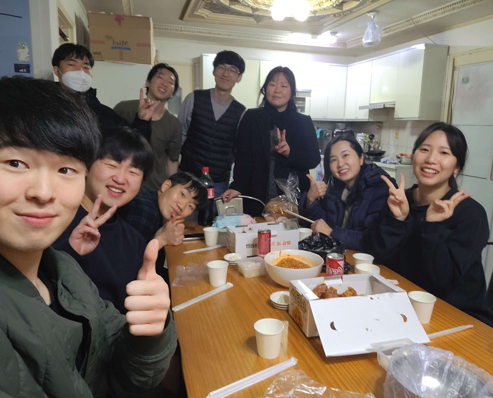
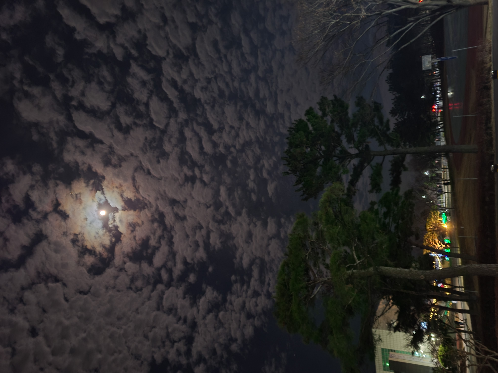
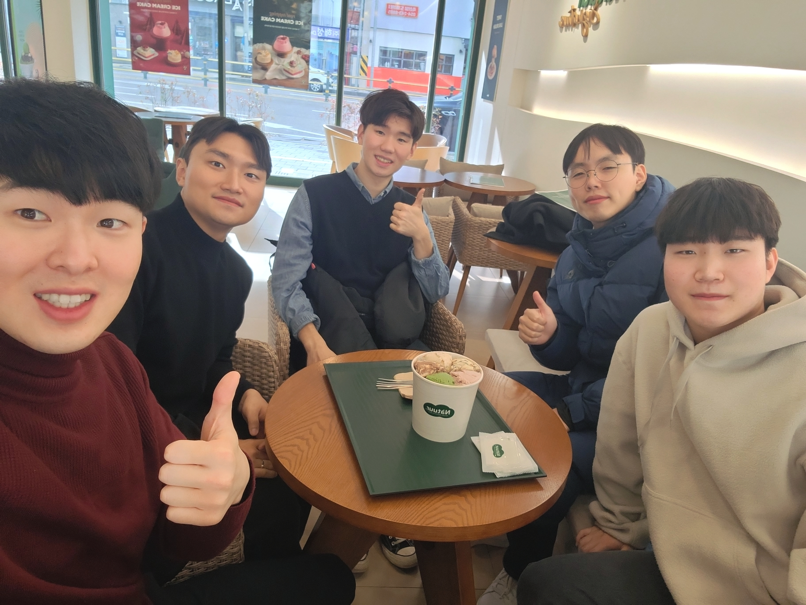
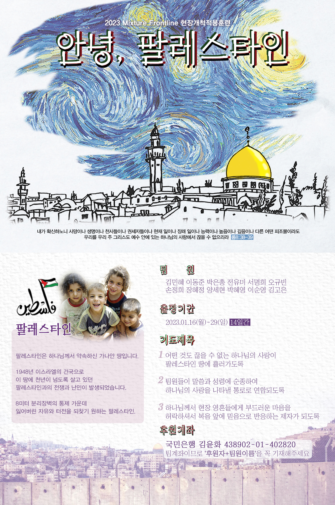

저는 이전 기도편지에서도 나누었듯이, 팔레스타인 단기선교를 준비하고 있습니다(기간: 1.16 - 1.30). 팔레스타인을 간다고 하면, 종종 위험한 데 아니냐고 걱정하시는 분이 계신데, 저희가 가는 지역은 팔레스타인 내 서안지구로, 기독교의 성지인 베들레헴, 여리고, 헤브론, 세겜땅이 있는 지역입니다. 매년 수많은 한국교회 성도분들이 성지로 가는 곳이기도 하고, 현지 선교사님의 가이드를 들은 후에, 보안과 안전에 유의하며 다닙니다 :)

<새로운 공동체원과 함께>
팔레스타인 땅에 대해서 간략하게 소개하면, 나라 전체가 높이 7미터의 콘트리트 장벽에 둘러쌓여 있는, 마치 감옥안에 갇혀있는 듯한 나라입니다. 이스라엘과 땅에 대한 갈등 문제가 해결되지 않아, 정해진 지역내에서 갇혀 살고 있습니다. 이스라엘 입장에서는 자국의 보안을 보장하기 위해서 장벽을 만들고, 팔레스타인 땅을 조금씩 빼앗고 있습니다. 팔레스타인 사람들도 이에 대해, 반발하며 이스라엘 군인에게 돌을 던지고, 민중들이 모여서 봉기를 일으키기도 합니다. 국제정치적 관점에서 이 땅 문제는 정말 답이 없어보입니다. 학자들은, 일국 방안, 양국 방안 등 나름 대안을 제시하고 있지만, 이스라엘과 팔레스타인 양측이 받아드리기는 어려워 보입니다. 첨예한 이해관계 안에서, 분열과 다툼, 울분의 역사는 끝없이 이어지며, 스스로를 더 아프게 만들고 있습니다. 무고한 사람들이 희생당하고, 평생을 분노와 미움을 가지고 살아갑니다. 아마, 이러한 모습가운데 가장 마음 아프신 분이 하나님 아버지이실 것 같습니다.
최근 탕자에 대한 말씀을 보며, 하나님의 마음에 대해서 묵상된 부분이 있습니다.

<한동의 밤 하늘>
눅 15: 20, 25, 29 (길어서 몇절만 가져왔습니다)
20 이에 일어나서 아버지께로 돌아가니라 아직도 거리가 먼데 아버지가 그를 보고 측은히 여겨 달려가 목을 안고 입을 맞추니...
25 맏아들은 밭에 있다가 돌아와 집에 가까이 왔을 때에 풍악과 춤추는 소리를 듣고...
29 아버지께 대답하여 이르되 내가 여러 해 아버지를 섬겨 명을 어김이 없거늘 내게는 염소 새끼라도 주어 나와 내 벗으로 즐기게 하신 일이 없더니
최근에 이 본문을 보면서 집중되었던 부분은 맏아들이 밭에 있다가 돌아왔다는 부분이였습니다. 아들이 밭일을 하고 돌아왔음을 생각해 볼 수 있는데, 가계의 유업을 이어받던 배경을 고려하면, 아버지의 지금 모습이 더 의아하게 느껴집니다.
아버지 입장에서, 먼곳에서 오는 둘째아들의 모습을 즉시 알기는 쉽지않은 상황입니다. 둘째 아들은 아버지의 재산을 완전히 탕진하고, 돼지가 먹는 음식조차 먹지 못할 정도로 가난하기에, 오랜세월 옷이 헤지거나 없어지고, 씻지도 못하면서, 이전의 몰골과는 비교할 수 없게끔 달라졌을 것이기 때문입니다. 먼 곳에서 오는 한 거지의 모습을 보며, 자기 아들인지 즉시 분간하고 달려 간다는 말은, 아버지가 다른 일에 집중하지 못하고 자기 아들이 돌아오기만을 기다리며, 먼곳을 응시하고 있었다는 것을 추측해보게 합니다.

<교회 청년들과 함께>
밭일을 해야하는 집안이기에, 마땅히 아버지가 해야하는 역할이 있었겠지만, 지금 아버지는 그 일에 집중을 못하고 있습니다. 그저 먼 곳을 바라보며 저 사람이 내 아들인가 아닌가에 몰두했을 것 같기도 합니다. 아들이 돌아오기 까지는, 정상적으로 해야하는 일상을 살지 못하는 아버지의 모습을 보게 됩니다. 아버지는 아마, 잃어버린 아들 생각에, 일이 손에 잡히지 않아 계속해서 먼곳을 응시했을 것 같습니다. 먼 나라에 흉년이 들었다는데, 혹시나 아들이 돌아오지 않을까... 돌아온다면 저기 보이는 저 길로 오려나... 하면서, 둘째 아들이 돌아오기만을 간절히 기다렸던 것 같습니다. 잃어버린 자녀를 향한 하나님의 마음이, 얼마나 애달픈지 모르겠습니다. 내 자녀가 돌아오기까지는, 잃어버린 자녀가 돌아오는 일 이외에는 관심을 둘 수 없는 절박한 마음이 우리 하나님 아버지의 마음인 것 같습니다.
그러나 정말 신기하게도, 첫째 아들은 아버지의 마음을 모릅니다. 일하지 않고 먼 곳만 응시하는 아버지의 모습을 계속해서 보았을텐데, 첫째아들은 그 아버지의 마음을 모릅니다. 아버지와 항상 옆에서 함께하고 있지만, 정작 그 마음을 모르고, 자기가 받을 염소에 대해 생각하고 있습니다. 어떻게 모를 수 있나 싶을 정도인데, 자기의 노력에 대한 보상만 받고자 하는 품꾼의 마음으로, 아버지의 마음과는 동떨어진 삶을 살았던 것 같습니다.
우리가 아버지의 마음을 아는 자가 되길 원합니다. 팔레스타인과, 열방에 수많은 민족이 돌아오기 전에는, 하나님 아버지의 마음에 진정한 기쁨이 있으시기는 힘들 것 같습니다. 잃어버린 수많은 자녀들이 돌아오기를 기다리시면서, 뻥 뚫린 허전한 마음을 감추지 못하시고, 당신의 자녀들을 기다리고 계십니다. 첫째 아들과 같이, 하나님과 함께하지만 그분의 마음에는 별 관심없이, 내가 받아야 할 것에 집중하는 것이 너무나 자연스러운 저의 마음이지만, 하나님의 마음을 아는 성숙한 자녀가 되기를 원합니다. 그리고 우리 모두가 성숙한 자녀가 되어 아버지의 마음을 기쁘시게 하기를 소망합니다. 잃어버린 자녀들에게 진정한 하나님 아버지를 되찾아주는 선교의 여정가운데 온 마음으로 함께해주시기를 간곡히 부탁드립니다.
1. 저와 팀원들에게 팔레스타인을 향한 하나님의 마음이 부어져, 주님의 마음으로 그들을 섬길 수 있도록 기도해주세요
2. 팔레스타인에 있는 잃어버린 주님의 자녀들이, 진정한 아버지되시는 하나님을 알게 되기를 기도해주세요.
3. 한국교회의 청년, 성도분들이 아버지 되시는 하나님의 마음을 따라 선교의 여정가운데 동참하도록 기도해주세요.

<팔레스타인 기도카드>
* 또한 기도하며 재정 후원으로도 함께 해주기를 원하시는 분들께서는 아래의 계좌를 통해 재정후원으로도 함께 해주시기를 정중히 부탁드립니다.
국민은행 438902-01-402820 김윤화
*팀 계좌이므로 입금자명을 "팔은총 + 후원자님의 성함"으로 꼭 기입해주세요!
("팔은총"은 팔레스타인 민족 단기선교팀의 박은총이라는 뜻입니다)